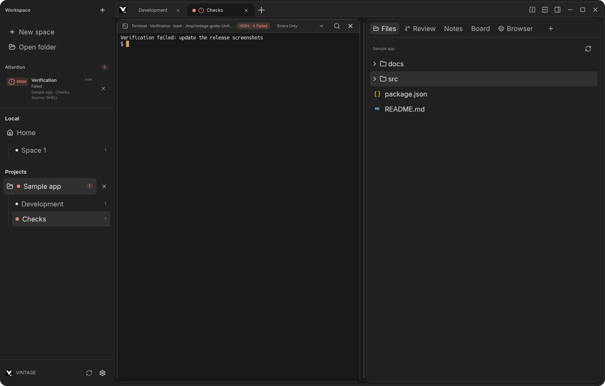
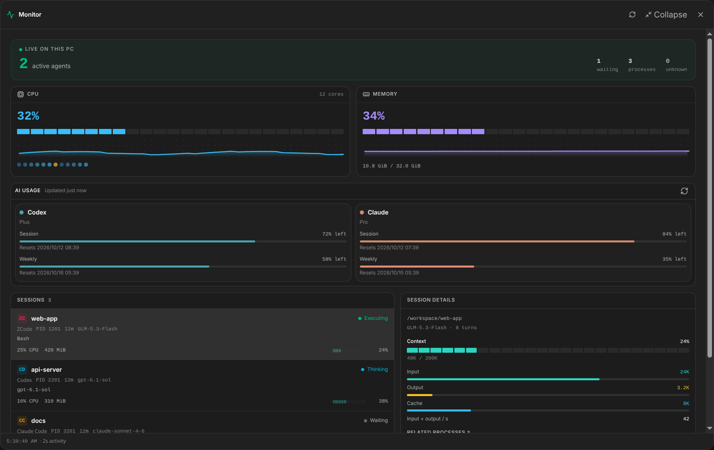
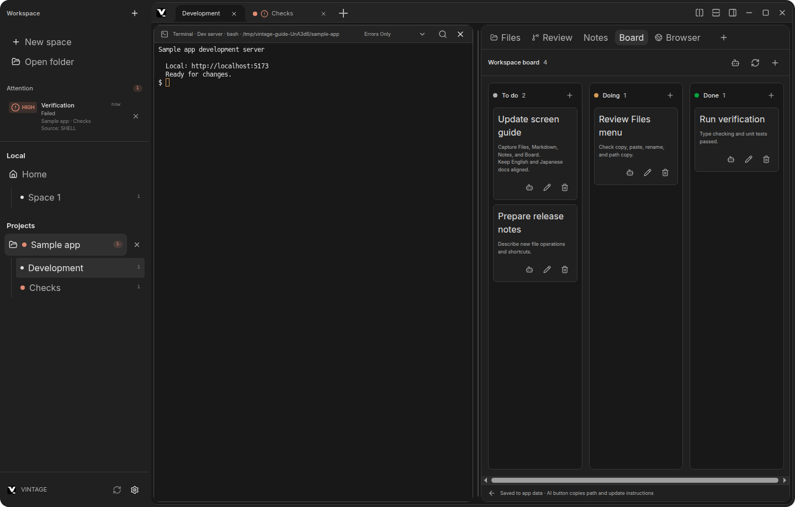

Agents run in parallel.
The terminal calls you back.
VINTAGE is a terminal workspace that runs multiple AI agents side by side on one screen. Completion, error, input needed — the moment it matters, it comes to you.
Linux · macOS · Windows ／ Apache 2.0 open source
You're running 5 agents simultaneously.
Do you know what any of them are doing?
You open a terminal. Then another. Three more. Each one is running a different agent on a different task. One finishes and sits waiting for input. One crashes silently. Two are still going. Which is which? You're alt-tabbing between windows, scrolling through output, trying to remember which pane you kicked off that refactor in.
Parallel work needs a workspace where you can see the state. VINTAGE is that workspace.
The terminal comes to you.
Attention
When a background terminal finishes, errors, or stalls, VINTAGE fires a notification. One click takes you straight back to that exact terminal. No alt-tab archaeology.

Monitor
Live CPU and memory, plus every AI session on the machine — the tool in use, context usage, quota remaining. "I hit the limit without noticing" stops being a thing.

Board
Drop tasks in. Agents update cards, add subtasks, and close tickets alongside you. Everything is stored locally.

All you need to run in parallel.
Space splitting
Split your workspace horizontally or vertically and run agents pane by pane. Each pane is independent, so a heavy build never blocks the rest of your work.
Sessions
Browse, search, pin, read, and resume past Claude Code / Codex / Grok / Antigravity conversations. "Which session was that in?" stops being a question.
Command palette
Ctrl+Shift+P jumps to any workspace, Space, terminal, or action. Your hands never leave the keyboard.
Themes
Vintage · Graphite · Ocean · Grove · Iris · Ember — independent light/dark palettes, full JSON import/export.
Start running in parallel, today.
Installers are on GitHub Releases. Free and open source.
Building from source? See the quick start in the README